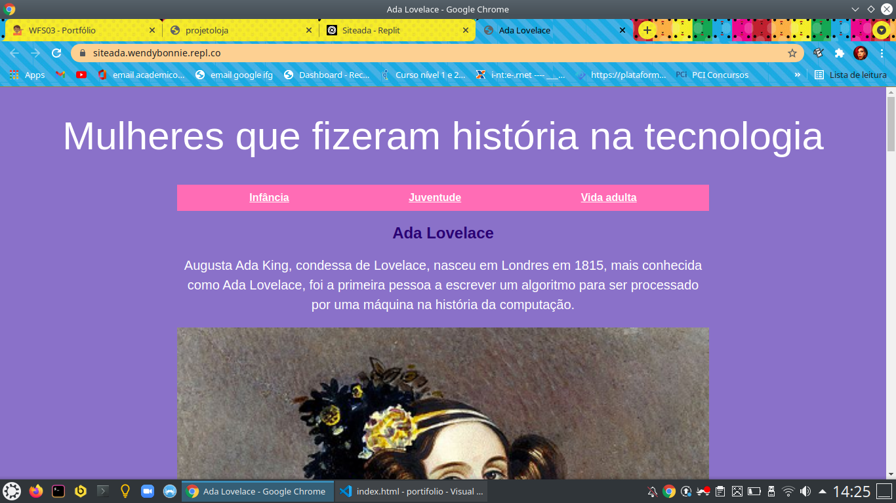
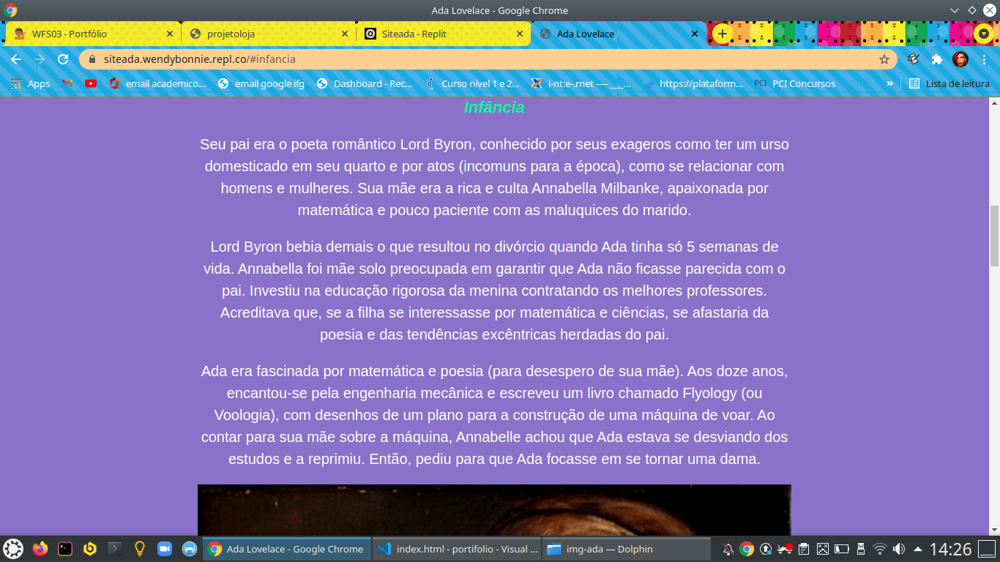
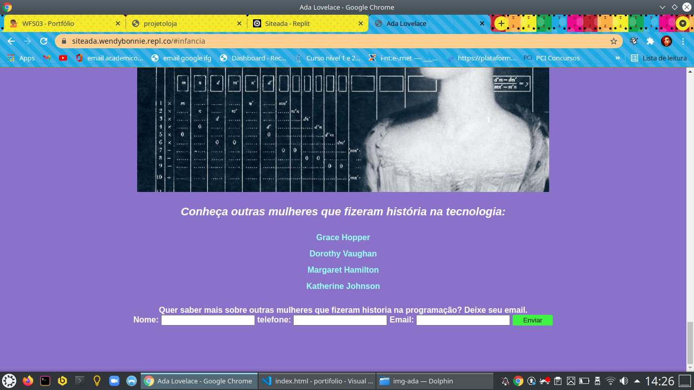

Projeto Ada Lovelace
Este foi um site desenvolvido no curso do programaria que consiste em um site criado em html, css e javascript com uma biografia sobre Ada Lovelace.
Inicio do site

Meio do Site

Formulario do site criado somente em javascript html e css, sem funcionamento por tras.
